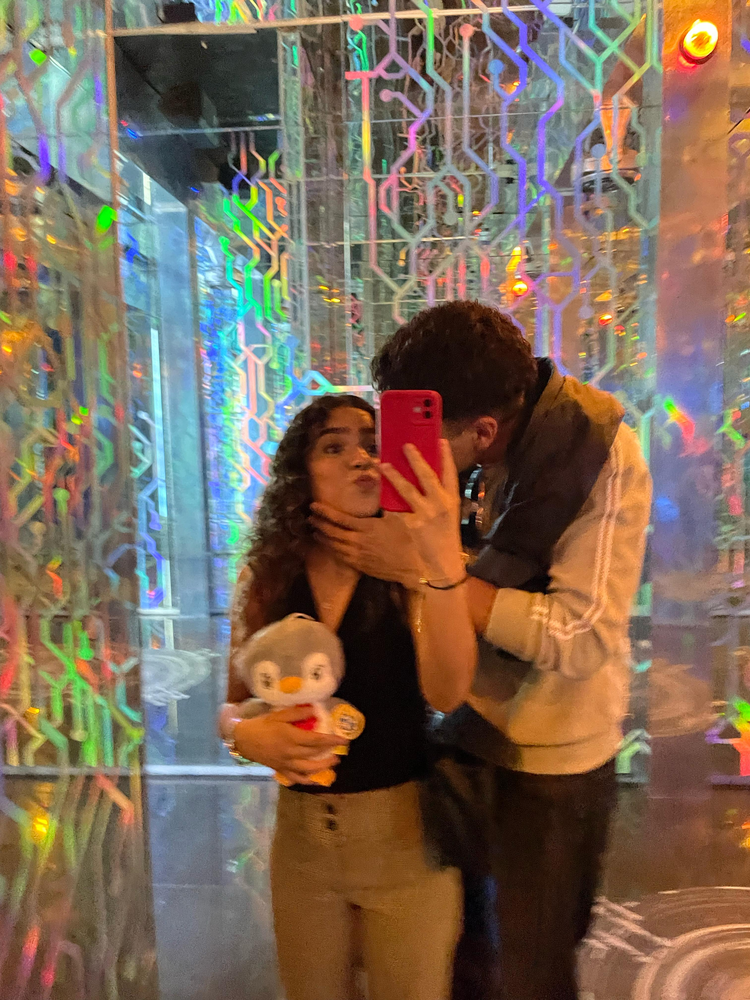
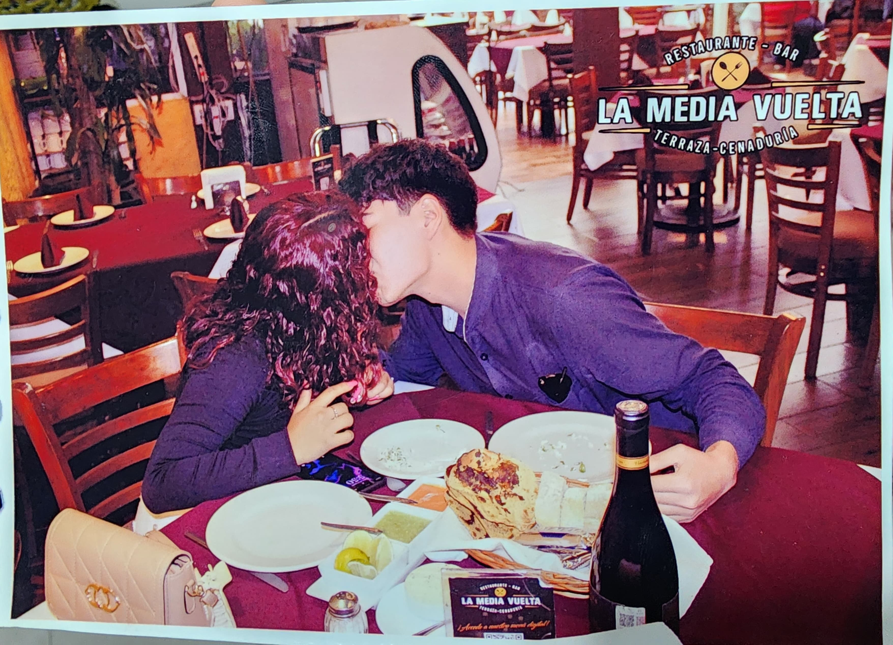

A ti te veo en todos mis planes, incluso en los que pense que no invitaria a nadie
Acuario Inbursa

Despues del Concierto de Gerardo Ortiz
Texcoco,La feria del caballo

Y en ese momento, juro que fuimos infinitos
Texcoco,La media vuelta

No se imaginan lo hermosa que es mi mujer
Texcoco,Boliche .
Banda y mi Mujer
Lugar del video 1
Medusas
Acuario Inbursa,CDMX

Salida planeada por mi mujer
Acuario Inbursa,CDMX

Chilaquiles y Suizas
Texcoco,La abuelita

NO se imaginan lo hermosa que es mi mujer
Semana de la Moda

Ramo de Gerberas
Texcoco,ALV Bar

Girasoles
Texcoco, Bar Center

Rosas con naturaleza muerta
Texcoco,ALV Bar

Sushi
Shushi Lin

Rosas con Hortensias
Texcoco,La feria del Caballo

Ramo de rosas
Texcoco,Sushi Bar